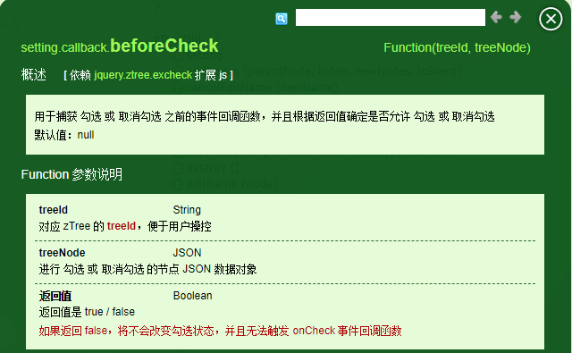

这几天在项目中遇到了要使用树形选择框, 而且要求比较复杂,具体叙述如下:
首先是有个选择框,左边选择是适用的商品,右边显示已经选择的商品.也就是说,左边每次勾选操作,都要触发一个事件去刷新右边的页面, 而且,左边商品如果选择大类,则右边显示大类,其下小类都不显示
也就是说有父子联动的关系. 刚开始的时候, 选择了使用bootStrap的tree_view这个插件,一开始还好,基本成型,后来测试时才发现问题,,当数据量很大的时候,,这个插件用起来很卡很卡,,而且又加了个带搜索功能,这个插件就显得有点鸡肋,这时才发现了ztree.
ztree虽然没有tree_view界面好看,但是其拥有强大的api,和渲染速度,,比前者好用多了.后面在数据渲染的时候遇到了一个问题,当时设置了父子级关联,然后再oncheck里面刷新右侧的显示界面.刚开始没啥问题,,后面当商品加到8000个的时候,,之前的问题又出现了,当我点击父级的时候,页面直接无响应.打上断点跟着,才发现ztree内部会由于关联关系,多次触发onchek事件,导致页面直接卡死.苦思良久都没得办法..直到无意中看到一个方法

beforeCheck,对就是这个方法,在oncheck触发之前的回调,,于是我想到了办法
1 var temp="";
2 var setting = {
3 check: {
4 enable: true,
5 autoCheckTrigger: true
6 },
7 data: {
8 simpleData: {
9 enable: true
10 }
11 },
12 callback: {
13 onCheck: zTreeOnCheck,
14 beforeCheck: zTreeBeforeCheck
15 }
16 };
17
18 function zTreeBeforeCheck(treeId, treeNode){
19 temp=treeNode;
20 }
21 function zTreeOnCheck(event, treeId, treeNode) {
22 //debugger
23 if(treeNode.name!=temp.name){
24 return;
25 }
26 refresh(treeNode);
27 }用一个temp去存储将要触发oncheck()的节点对象, 然后再在oncheck()方法中判断触发这个方法的是不是你当前所勾选的节点,如果不是就直接pass,这样一来,下面的刷新页面方法就不会因为父子联动而多次触发了,
页面的响应速度也是杠杠的.现在真的发现,ztree真的是个强大的工具,速度快,功能全,有很多你想不到的方法.
最后附上ztree地址:http://www.treejs.cn/v3/api.php